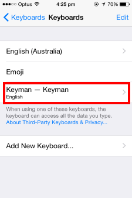

Keyman for iPhone and iPad: Installing the Keyman System Keyboard
Open the 'Settings' App and go to 'General' > 'Keyboard'.

Touch 'Keyboards'.

Enabling Keyman
To activate Keyman as a system keyboard, touch 'Add New Keyboard...'

Touch 'Keyman' under THIRD-PARTY KEYBOARDS.

Touch 'Keyman - Keyman'.

Turn on the 'Allow Full Access' toggle and confirm.

Your Keyman keyboards will now be available throughout your entire device. You can switch between Keyman keyboards and the default iOS keyboard layout by touching the globe key of the keyboard whenever you are typing.

On "Allow Full Access"
After opening the Keyman system keyboard for the first time in an app, you can turn off the "Allow Full Access" option again.
You may need to temporarily switch this on again in the future for app updates and for some changes to keyboard preferences.
It may always be safely deactivated immediately after opening the system keyboard again in an app.